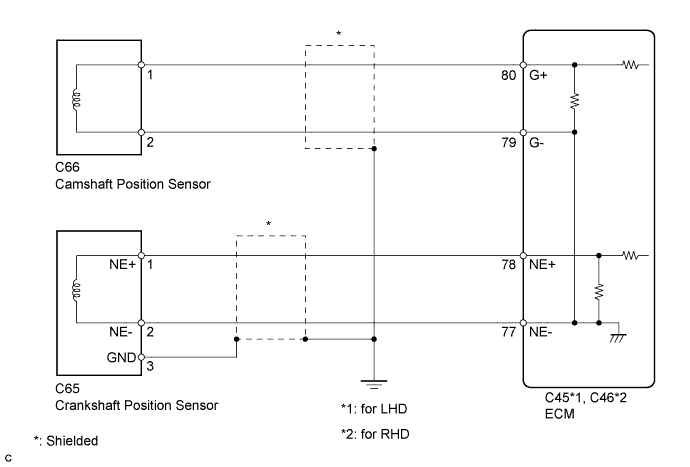
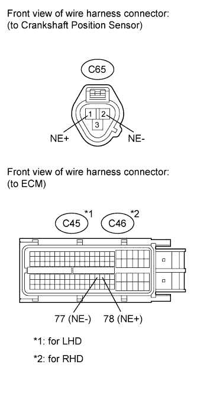
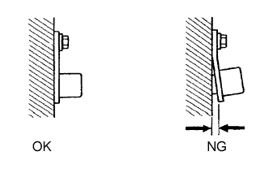

DTC P0335 Crankshaft Position Sensor "A" Circuit |
DTC P0339 Crankshaft Position Sensor "A" Circuit Intermittent |
| DTC Detection Drive Pattern | DTC Detection Condition | Trouble Area |
| Crank or start engine | When one of the following conditions is met (for 5 seconds during cranking or 0.5 seconds during engine start) (1 trip detection logic):
|
|
| DTC Detection Drive Pattern | DTC Detection Condition | Trouble Area |
| Engine running at 1000 rpm or more with vehicle stationary | No crankshaft position sensor signal is input to the ECM for 0.05 seconds or more, and conditions (a), (b) and (c) are met (1 trip detection logic):
|
|
| DTC No. | Data List |
| P0335 | Engine Speed |
| P0339 |

| 1.INSPECT CRANKSHAFT POSITION SENSOR |
 |
Disconnect the crankshaft position sensor connector.
Measure the resistance according to the value(s) in the table below.
| Tester Connection | Condition | Specified Condition |
| 1 (NE+) - 2 (NE-) | Cold | 1630 to 2740 Ω |
| 1 (NE+) - 2 (NE-) | Hot | 2065 to 3225 Ω |
|
| ||||
| OK | |
| 2.CHECK HARNESS AND CONNECTOR (CRANKSHAFT POSITION SENSOR - ECM) |
 |
Disconnect the crankshaft position sensor connector.
Disconnect the ECM connector.
Measure the resistance according to the value(s) in the table below.
| Tester Connection | Condition | Specified Condition |
| C65-1 (NE+) - C45-78 (NE+) | Always | Below 1 Ω |
| C65-2 (NE-) - C45-77 (NE-) | Always | Below 1 Ω |
| C65-3 - Body ground | Always | Below 1 Ω |
| Tester Connection | Condition | Specified Condition |
| C65-1 (NE+) - C46-78 (NE+) | Always | Below 1 Ω |
| C65-2 (NE-) - C46-77 (NE-) | Always | Below 1 Ω |
| C65-3 - Body ground | Always | Below 1 Ω |
| Tester Connection | Condition | Specified Condition |
| C65-1 (NE+) or C45-78 (NE+) - Body ground | Always | 10 kΩ or higher |
| C65-2 (NE-) or C45-77 (NE-) - Body ground | Always | 10 kΩ or higher |
| Tester Connection | Condition | Specified Condition |
| C65-1 (NE+) or C46-78 (NE+) - Body ground | Always | 10 kΩ or higher |
| C65-2 (NE-) or C46-77 (NE-) - Body ground | Always | 10 kΩ or higher |
|
| ||||
| OK | |
| 3.CHECK CRANKSHAFT POSITION SENSOR (SENSOR INSTALLATION) |
 |
Check the sensor installation.
|
| ||||
| OK | |
| 4.CHECK NO. 1 CRANKSHAFT POSITION SENSOR PLATE |
Check the teeth of the sensor plate.
|
| ||||
| OK | |
| 5.REPLACE ECM |
Replace the ECM (Click here).
|
| ||||
| 6.REPLACE CRANKSHAFT POSITION SENSOR |
Replace the crankshaft position sensor (Click here).
|
| ||||
| 7.REPAIR OR REPLACE HARNESS OR CONNECTOR |
|
| ||||
| 8.SECURELY REINSTALL SENSOR |
Securely reinstall sensor (Click here).
|
| ||||
| 9.REPLACE CRANKSHAFT |
Replace the crankshaft (Click here).
| NEXT | |
| 10.CONFIRM WHETHER MALFUNCTION HAS BEEN SUCCESSFULLY REPAIRED |
Connect the intelligent tester to the DLC3.
Clear the DTCs (Click here).
Turn the engine switch off.
Start the engine and run it at 1000 rpm or more.
Confirm that the DTC is not output again.
Enter the following menus: Powertrain / Engine / Utility / All Readiness.
Input DTC P0335 and/or P0339.
Check that STATUS is NORMAL. If STATUS is INCOMPLETE or UNKNOWN, after increasing the engine speed to 1000 rpm for approximately 1 second, idle the engine for 5 minutes.
| NEXT | ||
| ||